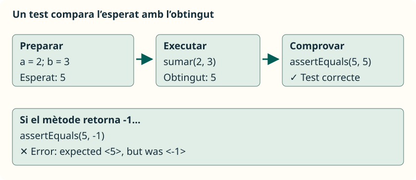
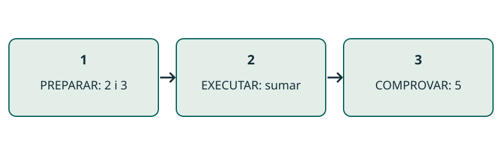
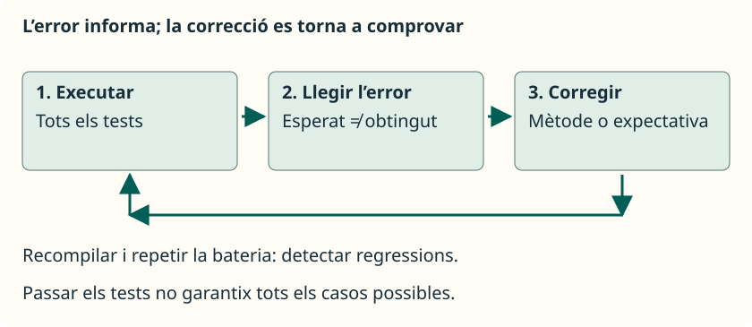
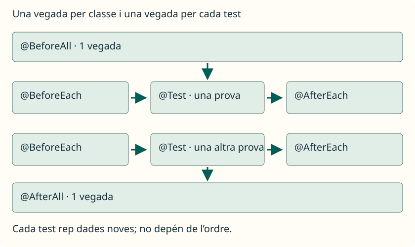

Testing amb JUnit
JAVA / JUNIT
Provar una tasca menuda
Un test unitari fixa una entrada i el resultat esperat.
JUnit crida el mètode i comprova el resultat per nosaltres. Podem repetir la prova després de canviar el codi; els casos triats determinen quins errors podem detectar.
assertEquals(5, Operaciones.sumar(2, 3));
JAVA / EXEMPLE DESENVOLUPAT
Primer fixem què ha de fer sumar
El resultat esperat es decidix amb el problema, abans d’executar.
Per a 2 i 3 esperem 5. Per a 8 i 0 esperem 8. Si prenem com a esperat allò que retorna el programa, una implementació incorrecta podria confirmar-se a si mateixa.
public class Operaciones {
public static int sumar(int a, int b) {
return a + b;
}
}JAVA / JUNIT
Preparar el projecte
Codi i tests en carpetes separades; JUnit dins de lib.
En VS Code, obrim la carpeta completa i configurem src, test i el JAR. Test Runner for Java executa els tests; no necessitem Maven, Gradle ni un main en la classe de proves.
src/Operaciones.java
test/OperacionesTest.java
lib/junit-platform-console-standalone-1.13.4.jar
.vscode/settings.jsonJAVA / EXEMPLE DESENVOLUPAT
Connectar les carpetes amb VS Code
L’editor necessita trobar tant els fonts com el JAR.
Obri la carpeta completa amb Extension Pack for Java. Guarda este fitxer en .vscode/settings.json; el JAR autònom 1.13.4 dels apunts ha d’estar en lib. sourcePaths incorpora els tests com a codi Java i referencedLibraries resol JUnit.
{
"java.project.sourcePaths": ["src", "test"],
"java.project.outputPath": "bin",
"java.project.referencedLibraries": [
"lib/**/*.jar"
]
}JAVA / EXEMPLE DESENVOLUPAT
Una classe de test completa
Els imports connecten les anotacions i assercions amb JUnit Jupiter.
@Test pertany a org.junit.jupiter.api. L’import static permet escriure assertEquals sense anteposar Assertions. La classe de prova no necessita main: l’executor troba i crida els seus mètodes de test.
import org.junit.jupiter.api.Test;
import static org.junit.jupiter.api.Assertions.*;
class OperacionesTest {
@Test
void sumarDosPositivos() {
assertEquals(5, Operaciones.sumar(2, 3));
}
}JAVA / JUNIT
Marcar i comprovar
@Test identifica una prova; l’asserció expressa el que ha d’ocórrer.
El mètode de test retorna void i no és static. El primer argument d’assertEquals és l’esperat, i el segon és el resultat de la crida.
@Test
void sumarDosPositivosDevuelveSuSuma() {
int obtenido = Operaciones.sumar(2, 3);
assertEquals(5, obtenido);
}JAVA / EXEMPLE DESENVOLUPAT
Preparar, executar i comprovar
Un test conta una història de tres passos.
Preparar fixa les dades. Executar crida el mètode que volem provar. Comprovar compara el resultat amb una referència coneguda. Mantindre visibles estes tres parts ajuda a localitzar l’origen d’un error.
@Test
void sumarDosPositivos() {
int a = 2, b = 3;
int obtenido = Operaciones.sumar(a, b);
assertEquals(5, obtenido);
}
JAVA / EXEMPLE DESENVOLUPAT
assertEquals: un valor concret
assertEquals(esperado, obtenido) expressa igualtat de valors.
Amb enters, 5 i 5 coincidixen; 5 i -1 no. Mantindre l’esperat en primer lloc permet llegir l’informe correctament. El missatge opcional explica quina promesa ha fallat.
Revelar el raonament
Passa si sumar retorna 5. Si resta i retorna -1, falla: expected <5> but was <-1>. Un println no produïx esta comprovació.
assertEquals(5, Operaciones.sumar(2, 3),
"2 + 3 = 5");JAVA / EXEMPLE DESENVOLUPAT
assertTrue: esperem una condició certa
Una propietat booleana es comprova sense inventar un nombre esperat.
esPar(8) ha de retornar true perquè el residu de dividir 8 entre 2 és zero. Si esPar retorna false, el test falla. L’asserció no crida main ni llig una resposta de la consola.
Revelar el raonament
Passa: true. Error deliberat: usar numero % 2 != 0 retorna false i fa fallar esta comprovació.
// Dins de Operaciones:
public static boolean esPar(int numero) {
return numero % 2 == 0;
}
// Dins de un @Test:
assertTrue(Operaciones.esPar(8));JAVA / EXEMPLE DESENVOLUPAT
assertFalse: false pot ser el correcte
Un test passa quan la resposta coincidix amb la promesa.
Per a 7, esPar ha de respondre false. assertFalse espera eixa resposta; no significa que vulguem que el test falle. Provar un parell i un imparell detecta un mètode que retornara sempre true.
Revelar el raonament
Passa si retorna false. Falla si retorna true. EN PARAULES SENZILLES: preguntar «és parell?» i rebre «no» pot ser exactament la resposta correcta.
@Test
void rechazaUnImpar() {
assertFalse(Operaciones.esPar(7));
}JAVA / JUNIT
Triar casos diferents
Els límits solen descobrir errors que un cas normal no revela.
Una nota vàlida està entre 0 i 10, els dos inclosos. Provar 5 no distingix entre >= 0 i > 0; provar zero sí que permet detectar eixe canvi.
Veure l’explicació
Zero ha d’admetre’s; la condició > 0 el rebutja. Cinc passa amb les dos condicions i no distingix l’error.
assertTrue(Operaciones.esNotaValida(0));
assertTrue(Operaciones.esNotaValida(10));
assertFalse(Operaciones.esNotaValida(-0.1));
assertFalse(Operaciones.esNotaValida(10.1));JAVA / EXEMPLE DESENVOLUPAT
Triar casos que distingisquen errors
Provar diverses vegades el mateix tipus d’entrada aporta poca informació nova.
En esNotaValida admetem de 0 a 10, inclosos. Un cas interior comprova la situació normal. Els extrems i els seus veïns detecten límits mal escrits; cada cas té el seu motiu.
Revelar el raonament
Amb nota > 0, el test de 0 falla; amb nota < 10, el de 10 falla. El cas 5 passa amb els dos errors.
// Entrada Esperat Motiu
// 5 true interior
// 0 true límit inferior
// 10 true límit superior
// -0.1 false fora per baix
// 10.1 false fora per daltJAVA / EXEMPLE DESENVOLUPAT
Cadenes: els espais també compten
assertEquals compara el contingut de String.
El contracte de prepararSaludo promet «Hola, » seguit del nom. Un espai absent és un resultat diferent. Comparar amb == no és ací la forma d’expressar igualtat de contingut.
Revelar el raonament
Passa amb "Hola, Ana". Falla amb "Hola,Ana" o "Hola, Luis". El test ens obliga a concretar el format promés.
assertEquals("Hola, Ana",
Operaciones.prepararSaludo("Ana"));JAVA / JUNIT
Comprovar també els efectes
Un mètode que crea una còpia ha de conservar l’array original.
assertArrayEquals revisa les caselles. Comprovem el resultat i l’original perquè retornar valors correctes no és suficient si hem canviat dades que havien de conservar-se.
int[] original = {2, 5};
int[] nuevo = Operaciones.crearIncrementado(original);
assertArrayEquals(new int[] {3, 6}, nuevo);
assertArrayEquals(new int[] {2, 5}, original);JAVA / EXEMPLE DESENVOLUPAT
assertArrayEquals: revisar cada casella
Es comparen la longitud, els valors i el seu ordre.
Per al resultat esperat {3, 6}, {6, 3} falla en l’índex 0 i {3} falla per longitud. Dos arrays diferents poden contindre les mateixes dades; assertEquals no recorre les seues caselles.
Revelar el raonament
Passa encara que siguen dos arrays diferents. EN PARAULES SENZILLES: revisem el contingut de dos caixes, casella per casella.
int[] esperado = {3, 6};
int[] obtenido = {3, 6};
assertArrayEquals(esperado, obtenido);JAVA / EXEMPLE DESENVOLUPAT
Un resultat correcte pot ocultar un efecte incorrecte
Incrementar l’original i retornar-lo incomplix la promesa de crear una còpia.
Amb {2, 5}, una implementació defectuosa pot retornar {3, 6} i superar la primera asserció. La segona detecta que també ha canviat l’original. Si la primera falla, la segona ja no s’executa normalment.
Revelar el raonament
La correcció és escriure en un array nou, com en Funcions. No n’hi ha prou que el resultat semble correcte.
// Error deliberat dentro del método:
for (int i = 0; i < datos.length; i++) {
datos[i]++;
}
return datos;JAVA / JUNIT
Llegir un error
Expected descriu el que s’ha demanat; was mostra l’obtingut.
Si sumar resta per error, 2 i 3 produïxen -1. El test esperava 5. La línia de l’asserció ajuda a trobar la comprovació; la causa està en el mètode d’aplicació.
Revelar la correcció
La tasca és sumar. Corregix a return a + b; i repetix tots els tests. No canvies l’esperat a -1.
// Error deliberat en sumar:
return a - b;
expected: <5> but was: <-1>JAVA / JUNIT
Corregir i repetir
Una correcció ha de conservar els comportaments que ja funcionaven.
Recuperem la suma, recompilem i executem tota la bateria. Això ajuda a detectar regressions. No canviem l’esperat per a dissimular un error.
// Suma correcta:
return a + b;
// Totes les proves han de tornar a passar.
JAVA / JUNIT
Zero tests no és èxit
Abans d’interpretar el resultat, comprova que les proves s’han executat.
El primer exemple conté un test; el comptador augmenta en afegir més proves. Si no n’apareix cap, revisa l’anotació, els imports i la configuració de carpetes i biblioteca.
@Test // org.junit.jupiter.api.Test
void sumarCeroConservaElNumero() {
assertEquals(8, Operaciones.sumar(8, 0));
}JAVA / EXEMPLE DESENVOLUPAT
Executar i llegir el comptador en VS Code
Executa el test amb Run Test o des del panell Testing.
Amb la classe inicial s’ha d’executar una prova. Després d’afegir més mètodes @Test, el comptador augmenta. Una barra sense errors amb zero proves no demostra el comportament; revisa descobriment, imports i biblioteca abans d’interpretar el resultat.
// Exemple inicial, sense errors:
// Tests found: 1
// Tests started: 1
// Tests successful: 1
// Tests failed: 0JAVA / JUNIT
Triar l’asserció
Cada comprovació respon a una pregunta diferent.
assertEquals compara un valor; assertTrue i assertFalse esperen un booleà. assertArrayEquals revisa les caselles en ordre. Tria segons el comportament que ha de complir el mètode.
assertEquals(5, obtenido);
assertTrue(esValida);
assertFalse(esImpar);
assertArrayEquals(esperado, nuevo);JAVA / EXEMPLE DESENVOLUPAT
Decimals: fixar una tolerància
assertEquals(esperado, obtenido, tolerancia) admet una diferència menuda.
La mitjana de 0.1 i 0.2 es pot representar com 0.15000000000000002. Acceptem una diferència de fins a 0.000001 per a este exemple. Triem el marge segons el problema, abans de veure un error.
Revelar el raonament
Passa amb l’error menut de representació. Falla si el mètode retorna 0.3. Augmentar la tolerància fins a ocultar eixe error falsejaria la prova.
assertEquals(0.15,
Operaciones.calcularMedia(0.1, 0.2),
0.000001);JAVA / JUNIT
Buit i null són diferents
Una referència no nul·la no garantix un contingut correcte.
assertNotNull comprova que existix una referència. assertNull comprova l’absència acordada, com una cerca sense coincidències. Un array buit no és null: encara té longitud zero.
Veure l’explicació
No: existix un array buit. assertNull espera null, no una longitud de zero.
int[] datos = new int[0];
assertNotNull(datos);
assertArrayEquals(new int[0], datos);JAVA / EXEMPLE DESENVOLUPAT
assertNotNull: existix, però què conté?
Comprovar la referència és diferent de comprovar les dades.
crearIncrementado(new int[0]) ha de retornar un array buit. assertNotNull passa amb qualsevol array existent, fins i tot {99}. La segona asserció expressa que a més esperem zero elements.
Revelar el raonament
Si retorna null, falla la primera. Si retorna {99}, passa la primera i falla la segona. Una caixa buida continua sent una caixa.
int[] obtenido =
Operaciones.crearIncrementado(new int[0]);
assertNotNull(obtenido);
assertArrayEquals(new int[0], obtenido);JAVA / EXEMPLE DESENVOLUPAT
assertNull: l’absència està acordada
Una cerca sense coincidències pot retornar null com a resultat correcte.
buscarNombre retorna el nom trobat o null si no apareix. Provem absència i presència: un mètode que retornara sempre null passaria només el primer cas, però incompliria el segon.
Revelar el raonament
L’absència passa només amb null: ni "" ni "Eva" equivalen a null. Precondició de l’exemple: array i nom buscat no nuls.
String[] nombres = {"Ana", "Luis"};
assertNull(Operaciones.buscarNombre(nombres, "Eva"));
assertEquals("Ana",
Operaciones.buscarNombre(nombres, "Ana"));JAVA / JUNIT
Preparar cada prova
BeforeEach entrega dades noves a cada test.
Els mètodes anotats no són tests addicionals. BeforeAll i AfterAll s’executen una vegada per classe; BeforeEach i AfterEach envolten cada prova. En esta configuració, només els dos globals són static.
@BeforeEach
void prepararDatos() {
datos = new int[] {2, 5};
}
JAVA / EXEMPLE DESENVOLUPAT
BeforeEach: cada test comença de nou
La preparació comuna crea dades independents abans de cada prova.
JUnit crea per defecte una instància per test. El camp datos pertany a eixa instància i BeforeEach l’inicialitza. Un test pot modificar el seu array sense preparar l’entrada del següent; no hem de dependre de l’ordre d’execució.
Revelar el raonament
Afegir import org.junit.jupiter.api.BeforeEach. Este fragment va dins d’una classe de tests amb els imports de Test i Assertions.
private int[] datos;
@BeforeEach
void prepararDatos() {
datos = new int[] {2, 5};
}
@Test
void tieneDosElementos() {
assertEquals(2, datos.length);
}JAVA / EXEMPLE DESENVOLUPAT
Quatre moments, dos proves
All s’aplica a la classe; Each envolta cada test.
BeforeAll i AfterAll són static en el cicle predeterminat. BeforeEach i AfterEach no són static. Per a dos tests, hi ha una preparació global, dos preparacions individuals, dos tancaments individuals i un tancament global.
Revelar el raonament
A i B il·lustren un ordre possible, no una garantia. Els mètodes de preparació no compten com a tests addicionals.
BeforeAll
BeforeEach → test A → AfterEach
BeforeEach → test B → AfterEach
AfterAllJAVA / JUNIT
Descriure no és comprovar
DisplayName posa un nom llegible; l’asserció verifica la promesa.
Conserva @Test perquè JUnit reconega la prova. Un missatge opcional d’assertEquals explica l’error, però no canvia el resultat esperat ni convertix un println en una comprovació.
@Test
@DisplayName("Sumar dos positius")
void sumarDosPositivosDevuelveSuSuma() {
assertEquals(5, Operaciones.sumar(2, 3));
}JAVA / EXEMPLE DESENVOLUPAT
Separar un error de test d’un error de compilació
Un import sense resoldre impedix executar; una asserció fallida compara un resultat.
Si no es reconeix org.junit.jupiter.api, revisa el JAR i la configuració. Si l’informe mostra expected i was, el test sí que ha arribat a comprovar un valor. Primer identifica en quina fase estem per a corregir el problema adequat.
Revelar el raonament
Després de corregir el mètode, torna a executar tota la bateria. Superar els nostres casos aporta evidència; no demostra que hàgem previst totes les entrades possibles.
// Compilació: package ... does not exist
// Descobriment: 0 tests found
// Asserció: expected <5> but was <-1>